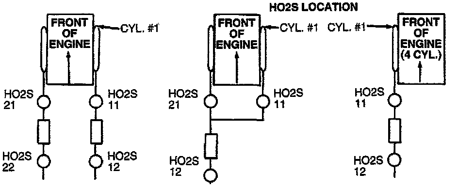

Oxygen Sensor Bank Locations

The first oxygen sensor in cylinder bank #1 is numbered O2 Sensor 1/1.
The second oxygen sensor in cylinder bank #1 is numbered O2 Sensor 1/2.
A third oxygen sensor in cylinder bank #1 would be numbered O2 Sensor 1/3.
The first oxygen sensor in cylinder bank #2 is numbered O2 Sensor 2/1.
The second oxygen sensor in cylinder bank #2 is numbered O2 Sensor 2/2.
- Cylinder bank number one is the bank that contains number one cylinder. Specifications
- If a V-6 or V-8 vehicle only uses one downstream Heated Oxygen Sensor (HO2S) it is numbered O2 Sensor 1/2, even if it uses two upstream HO2S.